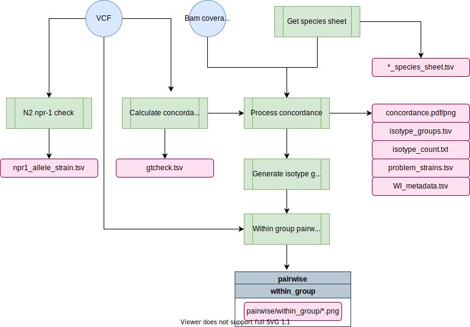

concordance-nf¶
The concordance-nf pipeline is used to detect sample swaps and determine which wild isolate strains should be grouped together as an isotype.
To determine which strains belong to the same isotype we use two criteria. First we look at the strains that group together with a concordance threshold of 99.95%. Generally this will group most isotypes without issue. However, it is possible that you will run into cases where the grouping is not clean. For example, strain A groups with B, B groups with C, but C does not group with A. In these cases you must examine the data closely to identify why strains are incompletely grouping. Our second criteria we use to group isotypes may address these types of groupings.
The second criteria that we use to group isotypes regards looking for regional differences among strains. If two strains are similar but possess a region of their genome (binned at 1 Mb) that differs by more than 2% then we will separate them out into their own isotypes.
The process of grouping isotypes is very hand-on. This pipeline will help process the data but you must carefully review the output and investigate closely.
Pipeline overview¶
┌─┐┌─┐┌┐┌┌─┐┌─┐┬─┐┌┬┐┌─┐┌┐┌┌─┐┌─┐ ┌┐┌┌─┐
│ │ │││││ │ │├┬┘ ││├─┤││││ ├┤───│││├┤
└─┘└─┘┘└┘└─┘└─┘┴└──┴┘┴ ┴┘└┘└─┘└─┘ ┘└┘└
parameters description Set/Default
========== =========== =======
--debug Set to 'true' to test false
--cores Regular job cores 4
--out Directory to output results concordance-{date}
--vcf Hard filtered vcf null
--bam_coverage Table with "strain" and "coverage" as header null
--info_sheet Strain sheet containing exisiting isotype assignment null
--species 'c_elegans' will check for npr1. All other values will skip this null
--concordance_cutoff Cutoff of concordance value to count two strains as same isotype 0.9995

Software Requirements¶
- The latest update requires Nextflow version 23+. On Rockfish, you can access this version by loading the
nf23_envconda environment prior to running the pipeline command:
module load python/anaconda
source activate /data/eande106/software/conda_envs/nf23_env
Relevant Docker Images¶
Note: Before 20220301, this pipeline was run using existing conda environments on QUEST. However, these have since been migrated to docker imgaes to allow for better control and reproducibility across platforms. If you need to access the conda version, you can always run an old commit with nextflow run andersenlab/concordance-nf -r 20220216-Release
andersenlab/concordance(link): Docker image is created within this pipeline using GitHub actions. Whenever a change is made toenv/concordance.Dockerfileor.github/workflows/build_docker.ymlGitHub actions will create a new docker image and push if successful
Make sure that you add the following code to your ~/.bash_profile. This line makes sure that any singularity images you download will go to a shared location on /vast/eande106 for other users to take advantage of (without them also having to download the same image).
# add singularity cache
export SINGULARITY_CACHEDIR='/vast/eande106/singularity/'
Note
If you need to work with the docker container, you will need to create an interactive session as singularity can't be run on Rockfish login nodes.
interact -n1 -pexpress
module load singularity
singularity shell [--bind local_dir:container_dir] /vast/eande106/singularity/<image_name>
Usage¶
Note: if you are having issues running Nextflow or need reminders, check out the Nextflow page.
Testing on Rockfish¶
This command uses a test dataset
nextflow run -latest andersenlab/concordance-nf --debug
Running on Rockfish¶
You should run this in a screen or tmux session.
nextflow run -latest andersenlab/concordance-nf --vcf=a.vcf.gz --bam_coverage=mqc_mosdepth-coverage-per-contig_1.txt
Parameters¶
-profile¶
There are three configuration profiles for this pipeline.
rockfish- Used for running on Rockfish (default).quest- Used for running on Quest.local- Used for local development.
Note
If you forget to add a -profile, the rockfish profile will be chosen as default
--bam_coverage¶
The sample sheet to use. This is generally the same sample sheet used for wi-gatk. The sample sheet should look like this:

Important
It is essential that you always use the pipelines and scripts to generate this sample sheet and NEVER manually. There are lots of strains and we want to make sure the entire process can be reproduced.
--vcf¶
The hard-filtered VCF output from wi-gatk.
--species (optional)¶
Common options include 'c_elegans', 'c_briggsae', and 'c_tropicalis'.
--concordance_cutoff (optional)¶
Cutoff to use to determine isotype groups. Default is 0.9995.
--cores (optional)¶
The number of cores to use during alignments and variant calling.
--out (optional)¶
A directory in which to output results. By default it will be concordance-YYYYMMDD where YYYYMMDD is todays date.
Output¶
├── concordance
├── gtcheck.tsv
├── isotype_count.txt
├── isotype_groups.tsv
├── problem_strains.tsv
├── WI_metadata.tsv
├── concordance.pdf/png
├── xconcordance.pdf/png
└── pairwise
└── within_group
└── {isotype_group}.{isotype}.{strain1}_{strain2}.png
- concordance.png/pdf - An image showing the distribution of pairwise concordances across all strains. The cutoff is at 99.9% above which pairs are considered to be in the same isotype unless issues arise.

- xconcordance.png/pdf - A close up view of the concordances showing more detail.

- isotype_groups.tsv - This is the one of the most important output files. It illustrates the isotypes identified for each strain and identifies potential issues.
A file with the following structure:

- group - A number used to group strains (in each row) into an isotype automatically. This number should be unique with the isotype column (e.g. 1--> AB1, 112 --> CB4858, BRC20067 --> 175). The number can change between analyses.
- strain - the strain
- isotype - the currently assigned isotype for a strain taken from the
WI Strain Infospreadsheet. When new strains are added this is blank. - latitude
- longitude
- coverage - Depth of coverage for strain.
- unique_isotypes_per_group - Number of unique isotypes when grouping by the group column. This should be 1. If it is more than 1, it indicates that multiple isotypes were assigned to a grouping and that a previously assigned isotype is now being called into question.
- unique_groups_per_isotype Number of unique groups assigned to an isotype. This should be 1. If it is higher than 1, it indicates that a strain is concordant with strains in two different isotypes (including blanks). If it is equal to 2 and contains blanks in the isotype column it likely means that an isotype should be assigned to that strain.
- strain_in_multiple_isotypes - Indicates that a strain is falling into multiple isotypes (a problem!).
- location_issue - Indicates a location issue. This occurs when strains fall into an isotype but are located far away from one another. Some are known issues and can be ignored.
- strain_conflict -
TRUEif any issue is present that should be investigated.
Note
This file might change as you manually adjust the concordance cutoff for each run
-
gtcheck.tsv - the other most important file. File produced using
bcftools gtcheck; Raw genotype differences between strains. This file is used in manual inspection of the isotype groups -
isotype_count.txt - Gives a count of the number of isotypes identified.
-
concordance/pairwise/ (directory)
Contains images showing locations where regional discordance occurs among strains classified as being the isotype. You must look through all these images to ensure there are no strains being grouped that have regions with significant differences (> 2%). The image below illustrates an example of this. ED3049 and ED3046 are highly similar (> 99.9%). However, they differ in a region on the right arm of chromosome II. We believe this was enough reason to consider them separate isotypes.